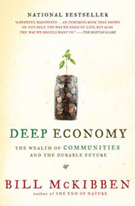

What is OneBook?
Each year our program selects a book and a theme for incoming first-year students like you to explore in your English 1301 classes. Having this one book in common means that you will be able to share ideas with other students and learn together, regardless of your intended major, residential situation or personal interests. Throughout the year, the OneBook program sponsors events and activities designed to help you un- derstand and discuss the book and its related theme. Now that you are a part of our University community, seize the opportunity and become an independent, creative thinker who connects with others on campus!
The OneBook for 2009-2010 is Deep Economy: The Wealth of Communities and Our Durable Future (2007)
